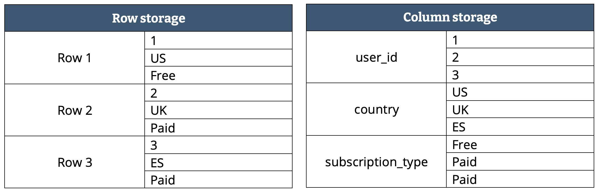
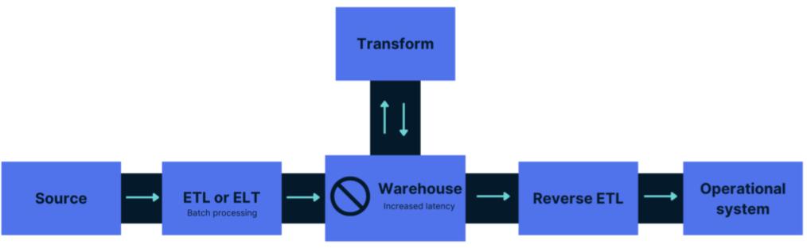
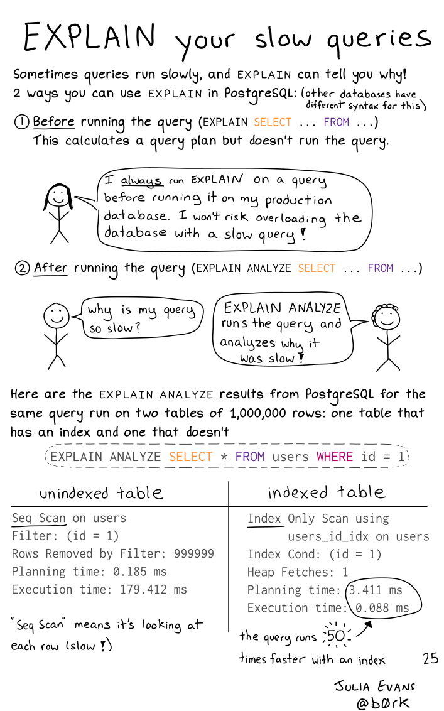
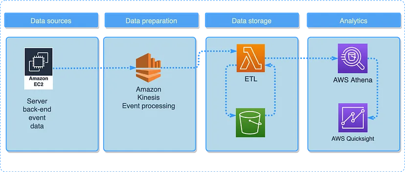
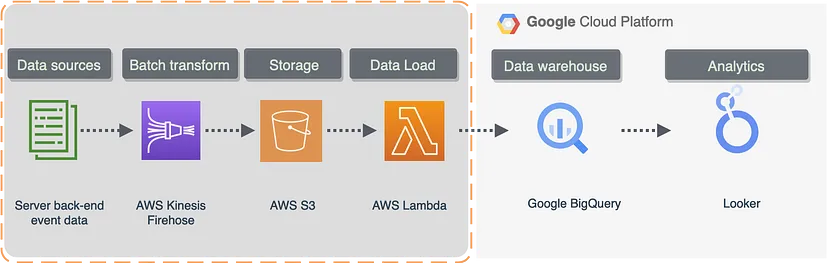

Engineering
Misc
- If you’re developing an application, a good rule of thumb is to write your frequently run queries in such a way that they return a response within 500 ms
- Column storage files (parquet) are more lightweight, as adequate compression can be made for each column. Row storage doesn’t work in that way, since a single row can have multiple data types.
- (See below) Apache Avro is smaller file size than most row format file types (e.g. csv)
- {pins}
- Convenient storage method
- Use when:
- Object is less than a 1 Gb
- Used {butcher} for large model objects
- Some model objects store training data
- Used {butcher} for large model objects
- Object is less than a 1 Gb
- Benefits
- Just need the pins board name and name of pinned object
- Think the set-up is supposed to be easy
- Easy to share; don’t need to understand databases
- Just need the pins board name and name of pinned object
{kind=link}
Terms
ACID - A database transaction, by definition, must be atomic, consistent, isolated and durable. These are popularly known as ACID properties. These properties can ensure the concurrent execution of multiple transactions without conflict. Guarantees data validity despite errors and ensure that data does not become corrupt because of a failure of some sort.
- Crucial to business use cases that require a high level of data integrity such as transactions happening in banking.
Batch processing - performing an action on data, such as ingesting it or transforming it, at a given time interval.
BTEQ - Batch Teradata Query (like SQL) is simply a utility and query tool for Teradata which is a relational database system Creating a BTEQ script to load data from a flat-file.
Concurrency - multiple computations are happening at the same time
Data Dump - A file or a table containing a significant amount of data to be analysed or transferred. A table containing the “data dump” of all customer addresses.
Data Mart - A subset of a data warehouse, created for a very specific business use case. Finance data mart storing all the relevant financial information required by the Accounting team to process their month-end cycles.
Data Integration - Usually, the hardest part of the project, where multiple sources of data are integrated into a singular application/data warehouse. Integrating finance and customer relationship systems integrating into an MS SQL server database.
Data Lake - A repository for all kinds of structured and unstructured data. Mainly based on Hadoop storage technology. Called a lake as it is flexible enough to store anything from raw data to unstructured email files. Hadoop Data Lake. Storing logs of all customers called into the inbound call centre including call duration.
Data Mesh - Decentralized design where data is owned and managed by teams across the organisation that understands it the most, known as domain-driven ownership. tl;dr - Each department controls they’re own data from ingestion to “data products.” This data product is then made a available to the other departments for them to use in their projects. Each department has their own engineers, scientists, and analysts.
Each business unit or domain aims to infuse product thinking to create quality and reusable data products — a self-contained and accessible data set treated as a product by the data’s producers — which can then published and shared across the mesh to consumers in other domains and business units — called nodes on the mesh.
Enables teams to work independently with greater autonomy and agility, while still ensuring that data is consistent, reliable and well-governed.
You don’t have to figure out who’s in charge of what data, who gets to access it, who needs to protect it and what controls and monitoring is in place to ensure things don’t go wrong.
Example: Banking
- Credit risk domain’s own data engineers can independently create and manage their data pipelines, without relying on a centralised ingestion team far removed from the business and lacking in credit expertise. This credit team will take pride in building and refining high-quality, strategic, and reusable data products that can be shared to different nodes (business domains) across the mesh.
Data Models - A way of organising the data in a way that it can be understood in a real-world scenario. Taking a huge amount of data and logically grouping it into customer, product and location data.
Data Quality - A discipline of measuring the quality of the data to improve and cleanse it. Checking Customer data for completeness, accuracy and validity.
Data Replication - There are multiple ways to do this, but mainly it is a practice of replicating data to multiple servers to protect an organisation against data loss. Replicating the customer information across two databases, to make sure their core details are not lost.
Denormalization - database optimization technique in which we add redundant data to one or more tables. Designers use it to tune the performance of systems to support time-critical operations. Done in order to avoid costly joins. Me: Seems like it’s kind of like a View except a View might have calculated columns in it.
Dimensions - A data warehousing term for qualitative information. Name of the customer or their country of residence.
Distributed SQL - a single logical database deployed across multiple physical nodes in a single data center or across many data centers if need be; all of which allow it to deliver elastic scale and resilience. Billions of transactions can be handled in a globally distributed database.
EDW - The same as a data warehouse except it includes all the data within an organisation. This means that the entire enterprise can rely on this warehouse for their business decisions. Organising sales, customer, marketing and finance data in an enterprise data warehouse to be able to create several key management reports.
Embedded aka In-Process
Embedded database as in a database system particularly designed for the “embedded” space (mobile devices and so on.) This means they perform reasonably in tight environments (memory/CPU wise.)
Embedded database as in databases that do not need a server, and are embedded in an application (like SQLite.) This means everything is managed by the application.
Facts - A data warehousing term for quantitative information. The number of orders placed by a customer.
Flat File - Commonly used to transfer data due to their basic nature; flat files are a single table storing data in a plain text format. All customer order numbers stored in a comma-separated value (.csv) file
Horizontal Scaling - Refers to the process of adding more nodes or instances to the database cluster to increase its capacity and performance. This is achieved by distributing the data and workload across multiple servers or nodes, rather than increasing the resources (aka Vertical Scaling) such as CPU, RAM, or storage of a single server. By adding more nodes to the cluster, the system can handle more concurrent connections, queries, and data processing operations.
HTAP - Hybrid Transactional Analytical Processing - System that attempts be good at both OLAP and OLTP
Master Data - This is data that is the best representation of a particular entity in the business. This gives you a 360 view of that data entity by generally consolidating multiple data sources. Best customer data representation from multiple sources of information.
Multi-Master - allows data to be stored by a group of computers, and updated by any member of the group. All members are responsive to client data queries. The multi-master replication system is responsible for propagating the data modifications made by each member to the rest of the group and resolving any conflicts that might arise between concurrent changes made by different members.
Advantages
- Availability: If one master fails, other masters continue to update the database.
- Distributed Access: Masters can be located in several physical sites, i.e. distributed across the network.
Disadvantages
- Consistency: Most multi-master replication systems are only loosely consistent, i.e. lazy and asynchronous, violating ACID properties. (mysql’s multi-master is acid compliant)
- Performance: Eager replication systems are complex and increase communication latency.
- Integrity: Issues such as conflict resolution can become intractable as the number of nodes involved rises and latency increases.
Can be contrasted with primary-replica replication, in which a single member of the group is designated as the “master” for a given piece of data and is the only node allowed to modify that data item. Other members wishing to modify the data item must first contact the master node. Allowing only a single master makes it easier to achieve consistency among the members of the group, but is less flexible than multi-master replication.
NiFi - It is an open-source extract, transform and load tool (refer to ETL), this allows filter, integrating and joining data. Moving postcode data from a .csv file to HDFS using NiFi.
Normalization - A method of organizing the data in a granular enough format that it can be utilised for different purposes over time. Organizing according to data attributes reduces or eliminates data redundancy (i.e. having the same data in multiple places). Usually, this is done by normalizing the data into different forms such as 1NF (normal form) or 3NF (3rd normal form) which is the most common. (See DB, Relational >> Normalization)
- Taking customer order data and creating granular information model; order in one table, item ordered in another table, customer contact in another table, payment of the order in another table. This allows for the data to be re-used for different purposes over time.
NULL indexes - These are the indexes that contain a high ratio of NULL values
Object-Relational Mapping (ORM) - Allows you to define your data models in Python classes, which are then used to create and interact with the database. See {{SQLAlchemy}}
ODS - Operational data store generally stores limited and current information to help simple queries. Unable to handle historical or complex data queries. An ODS for daily stock fluctuations in a warehouse help the warehouse manager decide what to prioritise in the next order delivery.
OLAP - Online Analytical Processing - large chunks of tables are read to create summaries of the stored data
- Use chunked-columnar data representation
OLTP - Online Transactional Processing - rows in tables are created, updated and removed concurrently
traditionally use a row-based data representation
postgres excels at this type of processing
RDBMS - Relational database management system. All of the above examples are RDBMS, meaning they store data in a structured format using rows and columns.
- A Microsoft SQL server database.
Real-Time Processing (aka Event Streaming) - each new piece of data that is picked up triggers an event, which is streamed through the data pipeline continuously
Reverse ETL - Instead of ETL where data is transformed before it’s stored or ELT where data is stored and transformed while in storage, Reverse ETL performs transformations in the pipeline between Storage and the Data Product.
SCD Type 1–6 - A method to deal with changes in the data over time in a data warehouse. Type 1 is when history is overwritten whereas Type 2 (most common) is when history is maintained each time a change occurs.
- When a customer changes their address; SCD Type 1 would overwrite the old address with the new one, whereas Type 2 would store both addresses to maintain history.
Schemas - A term for a collection of database objects. These are generally used to logically separate data within the database and apply access controls.
- Storing HR data in HR schema allows logical segregation from other data in the organisation.
Sharding - Horizontal Partitioning — divides the data horizontally and usually on different database instances, which reduces performance pressure on a single server.
- Requires a sharding key and a hash function. Then, the logic uses the hash function to map a key with an associated record to a shard, and then the shard to a database node.
Staging - The name of a storage area that is temporary in nature; to allow for processing of ETL jobs (refer to ETL). Typically data is loaded from a source database into the staging area database where it is transformed. Once transformed, it’s loaded into the production database where analytics can be performed on it.
- A staging area in an ETL routine to allow for data to be cleaned before loading into the final tables.
Transactional Data - This is data that describes an actual event.
- Order placed, a delivery arranged, or a delivery accepted.
Unstructured Data - Data that cannot be nicely organised in a tabular format, like images, PDF files etc.
- An image stored on a data lake cannot be retrieved using common data query languages.
{kind=link}
{kind=link}
{kind=link}
Data Quality
- Also see Production, Data Validation
- Accuracy - addresses the correctness of data, ensuring it represents real-world situations without errors. For instance, an accurate customer database should contain correct and up-to-date addresses for all customers.
- Completeness - extent your datasets have all the required information on every record
- Monitor: missingness
- Consistency - extent that no contradictions in the data received from different sources. Data should be consistent in terms of format, units, and values. For example, a multinational company should report revenue data in a single currency to maintain consistency across its offices in various countries.
- Timeliness - Data should be available at the time it’s required in the system
- Validity - ensuring that data adheres to the established rules, formats, and standards.
- Monitor: variable types/classes, numeric variable: ranges, number of decimal places, categorical variable: valid categories, spelling
- Uniqueness - no replication of the same information twice or more. They appear in two forms; duplicate records and information duplication in multiple places.
- Monitor: duplicate rows, duplicate columns in multiple tables
Cost Optimization
Also see
- Page 53 in SQL notebook
- Google, BigQuery >> Optimization
- SQL >> Best Practices
Avoid disk operations, make sure that you look out for hints & information in the
EXPLAIN PLANof your query. (e.g. using SORT without an index)
- When you see
filesort, understand that it will try to fit the whole table in the memory in many chunks.- If the table is too large to fit in memory, it will create a temporary table on disk.
- Look out for a
using filesortwith or without a combination ofusing temporary.
- When you see
Loading data in chunks or streaming it record by record for ETL jobs helps to optimize memory usage.
Split tables with many columns Might be efficient to split the less-frequently used data into separate tables with a few columns each, and relate them back to the main table by duplicating the numeric ID column from the main table.
- Each small table can have a primary key for fast lookups of its data, and you can query just the set of columns that you need using a join operation.
Primary keys should be global integers.
- Integers consume less memory than strings, and they are faster to compare and hash
Joins
- With correlated keys
- The query planner won’t recognize the correlated keys and do nested loop join when a hash join is more efficient
- I don’t fully understand what correlated keys on a join are, but see SQL >> Terms >> Correlated/Uncorrelated queries
- In the example below, a group of merge_commit_ids will only be from 1 repository id, so the two keys are associated in a sort of traditional statistical sense.
- Solutions
Use
LEFT_JOINinstead ofINNER_JOIN-
CREATE STATISTICS ids_correlation ON repository_id, merge_commit_id FROM pull_requests;“repository_id” and “merge_commit_id” are the correlated keys
I’m not sure if “ids_correlation” is a function or just a user-defined name
PostgreSQL ≥13 will recognize correlation and the query planner will make the correct calculation and perform a hash join
- With correlated keys
Pre-join data before loading it into storage
Indexes{#sec-db-eng-costopt-index}
- Indexes help in filtering data faster as the data is stored in a predefined order based on some key columns.
- If the query uses those key columns, the index will be used, and the filter will be faster.
- Suitable for any combination of columns that are used in filter, group, order, or join
- MySQL Docs
- Don’t use indexes with
LIKE - Cluster a table according to an index
Also see Google, BigQuery >> Optimization >> Partition and Cluster
Rearranges the rows of a table on the disk
Doesn’t stay “clustered” if table is updated
- See pg_repack for a solution
Example
-- create index CREATE INDEX pull_requests_repository_id ON pull_requests (repository_id, number) -- cluster table CLUSTER pull_requests USING pull_requests_repository_id
- Indexes help in filtering data faster as the data is stored in a predefined order based on some key columns.
Useful for queries such as
SELECT * FROM pull_requests WHERE repository_id IN (...) AND number > 1000Best Pactices
- Avoid too many indexes
- A copy of the indexed column + the primary key is created on disk
- Indexes add to the cost of inserts, updates, and deletes because each index must be updated
- Before creating an index, see if you can repurpose an existing index to cater to an additional query
- Create the least possible number of indexes to cover most of your queries (i.e. Covering Indexes).
Makes effective use of the index-only scan feature
Add
INCLUDEto the create index expressionExample
-- query SELECT y FROM tab WHERE x = 'key'; -- covering index, x CREATE INDEX tab_x_y ON tab(x) INCLUDE (y); -- if the index, x, is unique CREATE UNIQUE INDEX tab_x_y ON tab(x) INCLUDE (y);- y is called a non-payload column
- Don’t add too many non-payload columns to an index. Each one duplicates data from the index’s table and bloat the size of the index.
- y is called a non-payload column
Example: Query with function
-- query SELECT f(x) FROM tab WHERE f(x) < 1; -- covering index, x CREATE INDEX tab_f_x ON tab (f(x)) INCLUDE (x);- Where f() can be MEAN, MEDIAN, etc.
- Fix unusable indexes
- Issues related to data types, collation (i.e. how it’s sorted), character set (how the db encodes characters), etc
- Sometimes you can make the indexes work by explicitly forcing the optimizer to use them. (?)
- Repurpose or delete stale indexes
- Indexes are designed to serve an existing or a future load of queries on the database
- When queries change, some indexes originally designed to serve those queries might be completely irrelevant now
- Automate stale index removal. Dbs keep statistics. Write a script to either notify you or just delete the index if it’s older and not been used past a certain threshold
- Use the most cost efficient index type
- Example: If your use case only needs a regular expression search, you’re better off having a simple index than a Full Text index.
- Full Text indexes occupy much more space and take much more time to update
- Example: If your use case only needs a regular expression search, you’re better off having a simple index than a Full Text index.
- Don’t index huge tables (> 100M rows), partition instead
- Then prune the partitions (partition pruning) you don’t need and create indexes for the partitioned tables you do keep.
- Avoid too many indexes
Partitioning
Also see Google, BigQuery >> Optimization >> Partition and Cluster
Splits your table into smaller sub-tables under the hood
- Not viewable unless you check the table directory to see the multiple files that have been created
- The same goes for indexes on that table.
- Not viewable unless you check the table directory to see the multiple files that have been created
Use on tables with at least 100 million rows (BigQuery recommends > 1 GB) Partitioning helps reduce table size and, in turn, reduces index size, which further speeds up the Data Warehouse (DWH) operations. But, partitioning also introduces complexity in the queries and increases the overhead of managing more data tables, especially backups. So try a few of the other performance techniques before getting to Sharding.
Partition columns should always be picked based on how you expect to use the data, and not depending on which column would evenly split the data based on size.
- Example: partition on county because your analysis or transformations will largely be done by county even though since some counties may be much larger than others and will cause the partitions to be substantially imbalanced.
Use ELT (e.g. load data from on-prem server to cloud, then transform) instead of ETL (transform data while on-prem, then load to cloud) for data pipelines
- Most of the time you have a lot of joins involved in the transformation step
- SQL joins are one of the most resource-intensive commands to run. Joins increase the query’s runtime exponentially as the number of joins increases.
- Example
- Running 100+ pipelines with some pipelines having over 20 joins in a single query.
- Everything facilitated by airflow (see bkmk for code)
- ETL: postgres on-prem server, sql queries with joins, tasks ran 12+ hours, then the transformed data is loaded to google storage
- 13+ hrs for full pipeline completion
- ELT: running the queries with the joins, etc. with bigquery sql on the data after it’s been loaded into google storage.
- 6+ hrs for full pipeline completion
- Most of the time you have a lot of joins involved in the transformation step
Use Materialized Views
- A smaller data object that contains the subset of data resulting from a specific query
- Whereas a query happens after data is loaded, a materialized view is a precomputation
- The computation is done once, and changes to the data are incorporated as they occur, making subsequent updates to the view much cheaper and more efficient than querying the entire database from scratch
Fetching a large table will be slower if you try to use multiple cores.
- You have to divide up the table and recombine it. Plus setting up parallel network processes takes time.
- The time used to fetch some data from the internet depends massively on the internet bandwidth available on your router/network.
Use Random Access via http range header + sparse-hilbert index to optimize db for query searches
CITEXT extension makes it so you don’t have use
lowerorupperwhich are huge hits on performance (at least they are in WHERE expressions) GIN custom indexes forLIKEandILIKECREATE EXTENSION IF NOT EXISTS btree_gin; CREATE EXTENSION IF NOT EXISTS pg_trgm; CREATE INDEX index_users_on_email_gin ON users USING gin (email gin_trgm_ops);CREATE EXTENSIONadds btree and pg_trgm extensions- index_users_on_email_gin is the name of the index
- users is the table
USING gin (email gin_trgm_ops)ginspecifies that it’s a gin index- email is the field
gin_trgm_opsis from the pg_trgm extension. It splits the index into trigrams which is necessary for the gin index to work with LIKE or ILIKE
- Slower to update than the standard ones. So you should avoid adding them to a frequently updated table.
- GiST indexes are very good for dynamic data and fast if the number of unique words (lexemes) is under 100,000, while GIN indexes will handle 100,000+ lexemes better but are slower to update.
NULLS LASTputs the NULLS in a field in any sorting operations at the endThe default behavior of
ORDER BYwill put the NULLS first, so if you useLIMIT, you might get back a bunch of NULLS.Using NULLS LAST fixes this behavior but its slow even on an indexed column
- Example:
ORDER BY email DESC NULLS LAST LIMIT 10
- Example:
Instead use two queries
SELECT * FROM users ORDER BY email DESC WHERE email IS NOT NULL LIMIT 10; SELECT * FROM users WHERE email IS NULL LIMIT 10;- The first one would fetch the sorted non-null values. If the result does not satisfy the LIMIT, another query fetches remaining rows with NULL values.
Rebuild Null Indexes
DROP INDEX CONCURRENTLY users_reset_token_ix; CREATE INDEX CONCURRENTLY users_reset_token_ix ON users(reset_token) WHERE reset_token IS NOT NULL;- Drops and rebuilds an index to only include NOT NULL rows
- users_reset_token_ix is the name of the index
- users is the table
- I assume “reset_token has to be the field
Wrap multiple db update queries into a single transaction
- Improves the write performance unless the database update is VERY large.
- A large-scale update performed by a background worker process could potentially timeout web server processes and cause a user-facing app outage
- For large db updates, add batching
Example: db update has a 100K rows, so update 10K at a time.
UPDATE messages SET status = 'archived' WHERE id IN (SELECT ID FROM messages ORDER BY ID LIMIT 10000 OFFSET 0); UPDATE messages SET status = 'archived' WHERE id IN (SELECT ID FROM messages ORDER BY ID LIMIT 10000 OFFSET 10000); UPDATE messages SET status = 'archived' WHERE id IN (SELECT ID FROM messages ORDER BY ID LIMIT 10000 OFFSET 20000);- messages is the table name
- I guess
OFFSETis what’s key here.
{kind=link}
Event Tracking Systems
- Events are queued, then batch inserted into your db.
- Streaming events does not scale very well and is not fault tolerant.
- Commercial Services
- Segment
- Most popular option
- Very expensive
- Susceptible to ad blockers
- Only syncs data once per hour or two
- Missing a few key fields in the schema it generates (specifically, session and page ids).
- Freshpaint is a newer commercial alternative that aims to solve some of these issues.
- Segment
- Open Source (each with a managed offering if you don’t feel like hosting it yourself)
- Snowplow is the oldest and most popular, but it can take a while to setup and configure.
- Rudderstack is a full-featured Segment alternative.
- Jitsu is a pared down event tracking library that is laser focused on just getting events into your warehouse as quickly as possible.
Streaming
- Streaming or near real-time (i.e. micro-batch) data
- Questions
- What would be the data flow rate in that pipeline?
- Do you require real-time analytics, or is near-real-time sufficient?
- Data Characteristics
- It is ingested near-real-time.
- Used for real-time reporting and/or calculating near-real-time aggregates. Aggregation queries on it are temporal in nature so any aggregations defined on the data will be changed over time as the data comes.
- It is append-only data but can have high ingestion rates so needs support for fast writes.
- Historical trends can be analyzed to forecast future metrics.
- Relational databases can’t handle high ingestion rates and near-real-time aggregates without extensions.
- Steaming is the most expensive way to process the data in the majority of cases. Typically batch ingesting into warehouses is free, but streaming may not be.
- Use Cases: anomaly detection and fraud prevention, real-time personalized marketing and internet of things.
- Tools:
- Apache Kafka - Flexible, connects to app servers, other microservices, databases, sensor networks, financial networks, etc. and can feed the data to same types of systems including analytical tools.
- Utilizes a publish-subscribe model where producers (i.e. sources) publish data to topics and consumers (e.g. DBs, BI tools, Processing tools) subscribe to specific topics to receive relevant data.
- Highly scalable due to its distributed architecture, allowing data handling across multiple nodes.
- Confluent’s Kafka Connect - Open source and Commerical Connectors
- Apache Flume - Similar to Kafka but easier to manage, more lightweight, and built to output to storage (but not as flexible as Kafka)
- Less scalable as data ingestion is handled by individual agents, limiting horizontal scaling.
- Its lightweight agents and simple configuration make it ideal for log collection
- Can also handle Batch workloads
- Able to perform basic preprocessing, e.g. filtering specific log types or converting timestamps to a standard format
- Amazon Kinesis - A managed, commercial alternative to Kafka. Charges based on data throughput and storage. Additional features include data firehose for delivery to data stores and Kinesis analytics for real-time analysis.
- Apache Flink - Processes streaming data with lower latency than Spark Streaming, especially at high throughputs. Less likely to duplicate data. Uses SQL. Steeper learning curve given its more advanced features.
- Apache Spark Streaming - See Apache, Spark >> Streaming
- Google Pub/Sub - Uses Apache Beam programming API to construct processing pipelines
- Google Dataflow can create processing pipelines using streaming data from Pub/Sub. Developers write their pipelines using Beam’s API, and then Beam translates them into specific instructions for Flink or Spark to execute.
- {{temporian}} can interact with Beam to perform various time series preprocessing
- If you have existing workflows around Hadoop or Spark or expertise in those frameworks, then Google Dataproc allows you to reuse that code. It also allows you to used other libraries that aren’t available in Dataflow. Supports various languages like Java, Python, and Scala.
- For short-lived batch jobs, Dataproc might be more cost-effective. Although, Dataflow’s serverless nature avoids idle resource charges while Dataproc clusters incur costs even when idle.
- Google Dataflow can create processing pipelines using streaming data from Pub/Sub. Developers write their pipelines using Beam’s API, and then Beam translates them into specific instructions for Flink or Spark to execute.
- Apache Kafka - Flexible, connects to app servers, other microservices, databases, sensor networks, financial networks, etc. and can feed the data to same types of systems including analytical tools.
- Architectures
- Notes from
- ETL
- Kinesis collects data from a server (e.g. app) and continuously feeds it to a lambda function for transformation. Transformed data is deposited into a S3 bucket, queried using Athena, and visualized using Quicksight.
- Hybrid (Streaming and Batch)
- Kinesis streams data to S3 and when a threshold is reached, a lambda trigger activates a transformation/batch load to the BQ warehouse
- TimeScale DB
- Open source extension for postgresql
- Support all things postgresql like relational queries, full SQL support(not SQL-like) as well as the support of real-time queries
- Supports an ingestion of 1.5M+ metrics per second per server
- Near-real-time aggregation of tables
- Provides integration with Kafka, kinesis, etc for data ingestion.
- Can be integrated with any real-time visualization tool such as Graphana
- Pipeline DB
- Open source extension for postgresql
- Similar features as TimeScale DB
- Efficiency comes from it not storing raw data
- Usually, it’s recommended to store raw data
{kind=link}
{kind=link}
Other Tools
- DataFold monitors your warehouse and alerts you if there are any anomalies (e.g. if checkout conversion rate drops suddenly right after a deploy).
- Hightouch lets you sync data from your warehouse to your marketing and sales platforms.
- Whale is an open source tool to document and catalog your data.
- Retool lets you integrate warehouse data into your internal admin tools.
- Growth Book that plugs into your data warehouse and handles all of the complicated querying and statistics required for robust A/B test analysis.